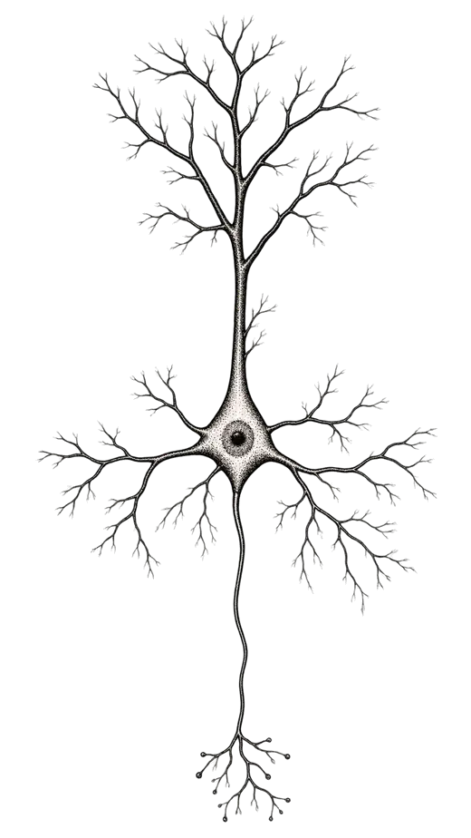

IA Conference Brasil · 2026
Por que nós não entendemos a Inteligência Artificial (ainda)
Adrian Valentim
Material de apoio da palestra: artigos, referências e alguns brinquedos.
Tudo aqui se mexe: passe o mouse, clique, arraste.
Nós entendemos perfeitamente a inteligência artificial.
Nós não temos a mínima ideia de como IAs fazem o que fazem.
Nós entendemos perfeitamente o treinamento.
Mas não entendemos como a rede neural resultante é capaz de fazer o que faz.
Não são criados,
mas cultivados.
Mesmas regras de crescimento. Outra semente, outra planta.
Um parâmetro.
bloco 0 · projeção query · linha 2, coluna 5
Role para se afastar ↓
Conhecemos cada conta.
Não sabemos o que ele aprendeu.
Entender a arquitetura pouco ajuda a prever ou entender os parâmetros resultantes.
TinyStories-1M · aguardando
Próxima palavra, segundo o modelo · clique para escolher
O modelo de verdade, com seus 3.745.984 parâmetros, rodando no seu navegador. Ele só conhece historinhas infantis em inglês, porque só leu isso.
- Planeja apenas uma palavra por vez.→ Falso
- Não consegue distinguir algo provável de algo falso.→ Falso
- Não tem acesso algum ao seu próprio estado interno.→ Falso
As evidências estão no fim da página. Antes, uma pergunta.
Mas o treinamento não foi todo programado? Como é possível que o resultado seja imprevisível?
“A visão de que máquinas não podem dar origem a surpresas se deve, acredito eu, a uma falácia à qual filósofos e matemáticos são particularmente suscetíveis. Trata-se da suposição de que, tão logo um fato é apresentado a uma mente, todas as consequências desse fato surgem na mente simultaneamente com ele. É uma suposição muito útil em muitas circunstâncias, mas facilmente se esquece de que ela é falsa.”
Regra 110
Oito regras, uma célula preta. Clique nas regras para trocá-las, ou na primeira linha para mudar o começo. A regra 110 é capaz de computação universal.
Jogo da vida de Conway
nasce
continua viva
morre
Nenhuma linha dessas regras menciona um planador.
Mas ele está lá.
Desenhe com o mouse ou o dedo. Os planadores achados pelo detector ficam em laranja. Procurar estruturas lá dentro é, em miniatura, o trabalho da interpretabilidade.
Máquina de Turing
Computação universal implica indecidibilidade: não existe um método geral para saber o que um programa fará sem rodá-lo.
- BB(4)
- 107 passos
- BB(5)
- 47.176.870 passos · provado só em 2024
- BB(6)
- ninguém sabe
Cada máquina aqui é a campeã “castor ocupado” do seu tamanho: a que roda por mais tempo antes de parar. Descobrir quanto a de cinco estados roda levou décadas de uma colaboração aberta.
LLMs são capazes de computação universal?
Com um bloco de notas para ler e escrever: sim.
E o treinamento por descida do gradiente, em si?
Clique (ou toque) para soltar uma bolinha. Ela desce pelo gradiente até algum vale. Qual vale depende de onde começou.
- Reduzir a perplexidade num oceano de texto com relativamente poucos parâmetros força o modelo a desenvolver estratégias internas.
- Uma propriedade é emergente se não dá para prevê-la olhando modelos menores, nem a arquitetura.
Resumindo até aqui
- Programas de regras simples frequentemente têm consequências imprevisíveis.
- O treinamento por descida do gradiente é um programa particularmente complicado, capaz de computação universal.
- Quem conhece o treinamento perfeitamente ainda pode se surpreender com a rede que ele produz.
Parte 2
(ainda)
O que podemos fazer sobre isso?
A área de pesquisa que busca entender as estruturas, algoritmos e mecanismos no interior de redes neurais.
Termo cunhado por Chris Olah por volta de 2020. A ideia é mais antiga: Rosenblatt já falava em mecanismos em 1962.
Três afirmações fundamentais
- RedutibilidadeExistem features: as unidades básicas de processamento de informação.
- ComposicionalidadeFeatures são combinadas por circuitos.
- UniversalidadeEstruturas análogas aparecem em redes diferentes.
A unidade básica

Um neurônio …
Uma direção: “ponte”
Dados reais do TinyStories-1M, camada 3. À esquerda, as palavras que mais ativam um neurônio do MLP sorteado: às vezes há um tema, muitas vezes é uma mistura. À direita, as mesmas palavras projetadas numa única direção do espaço de ativações, calculada só a partir de “bridge”. Riacho, túnel, penhasco, vale: ninguém mostrou essas palavras a ela.
Golden Gate Claude
Em 2024, a Anthropic achou dentro do Claude uma feature da Golden Gate Bridge, que dispara com o nome, com fotos, em outros idiomas, até com rotas que passam por ela.
Com a feature forçada para cima, o Claude ficou obcecado pela ponte. Com força suficiente, passou a dizer que era a ponte.
Faça você mesmo · TinyStories-1M, ao vivo, com a direção “ponte” somada na camada 3
Em laranja, palavras do universo “ponte”. Arraste devagar: primeiro a história muda de assunto; depois, perde o juízo. Decodificação gulosa, sem sorteio: o mesmo resultado sempre.
Uma palavra por vez?
A rhyming couplet:
Antes de escrever a segunda linha, o Claude já tem ativa a palavra que vai rimar, e escreve a linha em direção a ela. Suprimida essa feature, ele replaneja e rima com outra.
A direção da verdade
Esquema ilustrativo (os pontos não são dados do artigo). Nas ativações de modelos grandes, frases verdadeiras e falsas se separam ao longo de uma direção. Empurrar o modelo ao longo dela o faz tratar o falso como verdadeiro: é causal, não só correlação.
Introspecção
1 · Injetar um conceito
2 · Injeção retroativa
- ~20%
- das vezes o Claude Opus 4.1 detecta e nomeia o conceito, no melhor caso
- 0
- falsos positivos em 100 testes de controle, nos modelos de produção
- antes
- a detecção vem antes de o conceito aparecer na resposta
Respostas parafraseadas dos experimentos. É uma capacidade limitada e pouco confiável. E, ainda assim, existe.
Wir müssen wissen.
Wir werden wissen.
David Hilbert, 1930
Por onde começar
- Neel NandaGuia para começar em interpretabilidade mecanicista
- ARENAExercícios práticos, do transformer do zero até circuitos
- TransformerLensBiblioteca para abrir e cutucar modelos
- NeuronpediaExplore features e grafos de atribuição no navegador
- circuit-tracerO rastreamento de circuitos da Anthropic, em código aberto
- Transformer CircuitsOs artigos, em ordem, desde 2021
- Open Problems in Mechanistic InterpretabilityO mapa do que ainda não sabemos (2025)
- MATSPrograma de mentoria em pesquisa
- Anthropic FellowsPrograma de pesquisa em segurança e interpretabilidade
Referências
A metáfora
- Amodei, D. The Urgency of Interpretability, 2025. darioamodei.com
Os modelos
- Eldan, R.; Li, Y. TinyStories: How Small Can Language Models Be and Still Speak Coherent English?, 2023. arXiv:2305.07759 · checkpoint
- Vaswani, A. et al. Attention Is All You Need, 2017. arXiv:1706.03762
- Brown, T. et al. Language Models are Few-Shot Learners (GPT-3), 2020. arXiv:2005.14165
- Kimi Team. Kimi K2: Open Agentic Intelligence, 2025. arXiv:2507.20534
- Elhage, N. et al. A Mathematical Framework for Transformer Circuits, 2021. transformer-circuits.pub
Computação, emergência, imprevisibilidade
- Turing, A. Computing Machinery and Intelligence. Mind 59(236), 1950. doi
- Turing, A. On Computable Numbers, with an Application to the Entscheidungsproblem, 1936. doi
- Rice, H. G. Classes of Recursively Enumerable Sets and Their Decision Problems, 1953. teorema de Rice
- Wolfram, S. A New Kind of Science, 2002. wolframscience.com
- Cook, M. Universality in Elementary Cellular Automata. Complex Systems 15, 2004. complex-systems.com
- Gardner, M. Mathematical Games: The fantastic combinations of John Conway's new solitaire game “life”. Scientific American, 1970. texto
- Bedau, M. Weak Emergence. Philosophical Perspectives 11, 1997. doi
- O'Connor, T. Emergent Properties. Stanford Encyclopedia of Philosophy. plato.stanford.edu
- The bbchallenge Collaboration. Determination of the fifth Busy Beaver value, 2025. arXiv:2509.12337
- Schuurmans, D. Memory Augmented Large Language Models are Computationally Universal, 2023. arXiv:2301.04589
- Schuurmans, D.; Dai, H.; Zanini, F. Autoregressive Large Language Models are Computationally Universal, 2024. arXiv:2410.03170
- Pérez, J.; Barceló, P.; Marinkovic, J. Attention is Turing Complete. JMLR 22, 2021. jmlr.org
- Welper, G. Universality of Gradient Descent Neural Network Training, 2020. arXiv:2007.13664
- von Oswald, J. et al. Transformers Learn In-Context by Gradient Descent. ICML, 2023. arXiv:2212.07677
- Wei, J. et al. Emergent Abilities of Large Language Models, 2022. arXiv:2206.07682
- Schaeffer, R.; Miranda, B.; Koyejo, S. Are Emergent Abilities of Large Language Models a Mirage?, 2023. arXiv:2304.15004
- Anderson, P. W. More Is Different. Science 177, 1972. doi
Interpretabilidade mecanicista
- Rosenblatt, F. Principles of Neurodynamics. Spartan Books, 1962. relatório de 1961, archive.org
- Olah, C. et al. Zoom In: An Introduction to Circuits. Distill, 2020. distill.pub
- Saphra, N.; Wiegreffe, S. Mechanistic?, 2024. arXiv:2410.09087
- Mikolov, T. et al. Efficient Estimation of Word Representations in Vector Space, 2013. arXiv:1301.3781
- Karpathy, A.; Johnson, J.; Fei-Fei, L. Visualizing and Understanding Recurrent Networks, 2015. arXiv:1506.02078
- Radford, A.; Jozefowicz, R.; Sutskever, I. Learning to Generate Reviews and Discovering Sentiment, 2017. arXiv:1704.01444
- Goh, G. et al. Multimodal Neurons in Artificial Neural Networks. Distill, 2021. distill.pub
- Elhage, N. et al. Toy Models of Superposition, 2022. transformer-circuits.pub
- Bricken, T. et al. Towards Monosemanticity, 2023. transformer-circuits.pub
- Park, K.; Choe, Y. J.; Veitch, V. The Linear Representation Hypothesis and the Geometry of Large Language Models, 2023. arXiv:2311.03658
- Templeton, A. et al. Scaling Monosemanticity, 2024. transformer-circuits.pub
- Anthropic. Golden Gate Claude, 2024. anthropic.com
- Turner, A. M. et al. Steering Language Models With Activation Engineering, 2023. arXiv:2308.10248
- Lindsey, J. et al. On the Biology of a Large Language Model, 2025. transformer-circuits.pub
- Ameisen, E. et al. Circuit Tracing: Revealing Computational Graphs in Language Models, 2025. transformer-circuits.pub
- Marks, S.; Tegmark, M. The Geometry of Truth, 2023. arXiv:2310.06824
- Burns, C. et al. Discovering Latent Knowledge in Language Models Without Supervision, 2022. arXiv:2212.03827
- Lindsey, J. Emergent Introspective Awareness in Large Language Models, 2025. transformer-circuits.pub
- Sharkey, L. et al. Open Problems in Mechanistic Interpretability, 2025. arXiv:2501.16496
O fecho
- Hilbert, D. Discurso em Königsberg, 1930, em resposta ao ignoramus et ignorabimus. Wikipédia
Contato
- 0xadrianvalentim@gmail.com
- Substack · @adrianvalentim
- adrianvalentim.com
- Redes sociais · @adrian_valentim
IA Conference Brasil · 2026 · Adrian Valentim